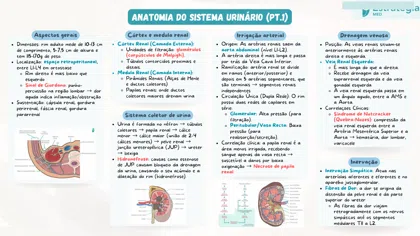

27.2 - Mapa Mental - Sistema Urinario4 páginas 27.3 - Anatomia do Sistema Urinario53 páginas27.4 - Fisiologia Renal - A Formacao da Urina - Parte I80 páginas
27.3 - Anatomia do Sistema Urinario53 páginas27.4 - Fisiologia Renal - A Formacao da Urina - Parte I80 páginas 27.4 - Fisiologia Renal - A Formacao da Urina - Parte II74 páginas
27.4 - Fisiologia Renal - A Formacao da Urina - Parte II74 páginas 27.5 - Histologia Renal55 páginas
27.5 - Histologia Renal55 páginas